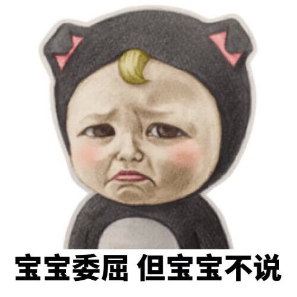
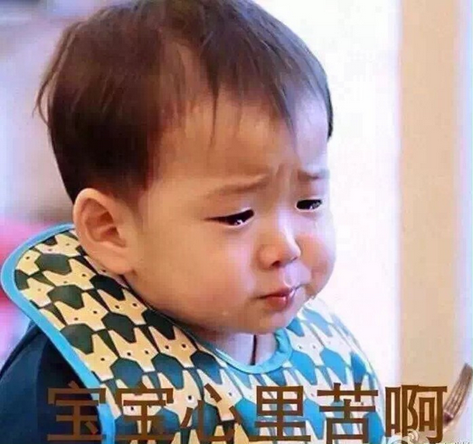

互惠动态
|
|
宝宝心里苦，但宝宝不说！
“宝宝难过，但宝宝不说”，台湾儿童福利联盟的调查显示，面对“失去”带来的负面情绪时，1/4的孩子不会与人分享，近三成感到悲伤难过也不会找人帮忙，会寻求他人安慰的仅3.8％。

调查数据显示，经历“失落事件”时，79.5％的孩子表示很伤心、难过、想哭，20.2％的孩子出现愤怒、生气等情绪，少部分孩子会感到害怕、紧张、自责或失望等。而如何面对“失落事件”及处理负面情绪，26.2％的孩子表示不会与他人分享不开心的事，29.8％的孩子表示即使觉得悲伤难过也不会找人帮忙，18％的孩子在悲伤难过时不知道如何调整心情。

出现负面情绪时，70.2％的孩子通过“做别的事”来转移注意力，如运动、听音乐、看电视等，16.5％的孩子通过“发泄”的方式释放情绪，如大喊、大叫、大哭，只有3.8％的孩子会寻求他人的支持与安慰。此外，有3.8％的孩子会出现较激烈的“攻击行为”，如打人或是自伤。
陈丽如表示，在少子化年代，孩子经常是家里的“天之骄子”，拥有一切最好的，从小也被教导争取考试名次、比赛成绩，对“拥有”存有较高期待。然而，“失去”也是生命无可避免的经历，应当有一堂课能让孩子们正确看待“失落事件”，并教导他们如何面对“失落”、如何寻求协助。

关于互惠，您了解得够多么？
请外国学生来家庭照顾孩子，辅导孩子外语？
只了解这些是不够的！
获取更多信息请参考以下方式：
联系ASC：
电话：86-21-61116069(上海中心）
86-25-66065662（南京中心）
手机：15601666586（可加微信）
Q Q：3259637585
微信：asc-center
邮箱：info@asc-center.com
网站：www.asc-aupair.com

感谢您对我们的关注